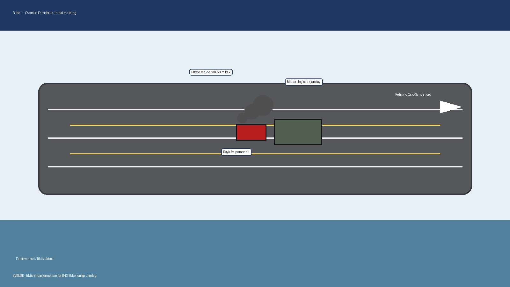
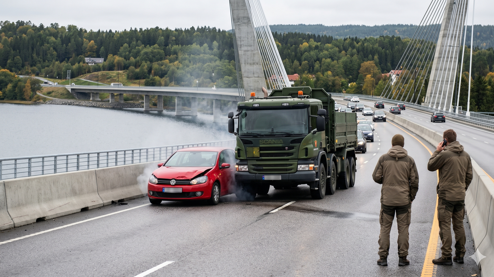
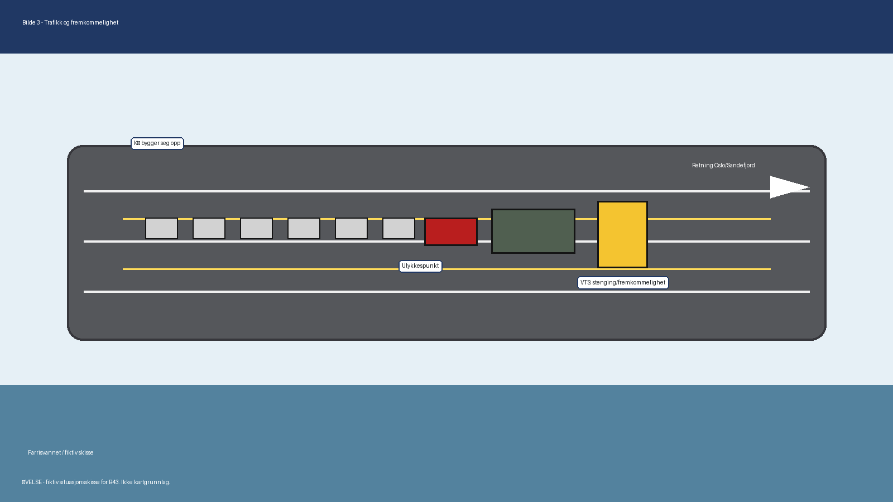
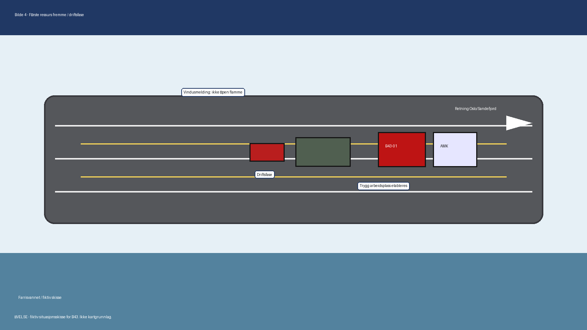
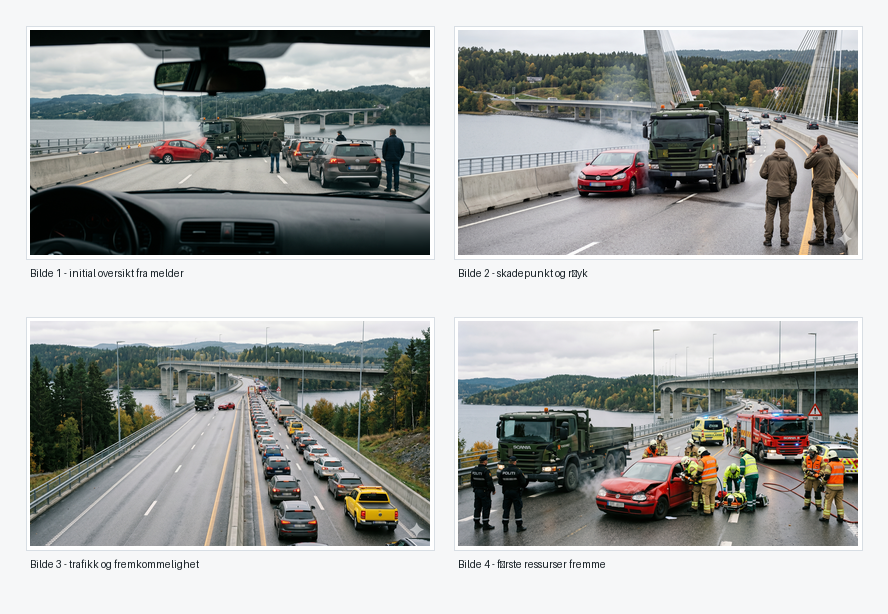
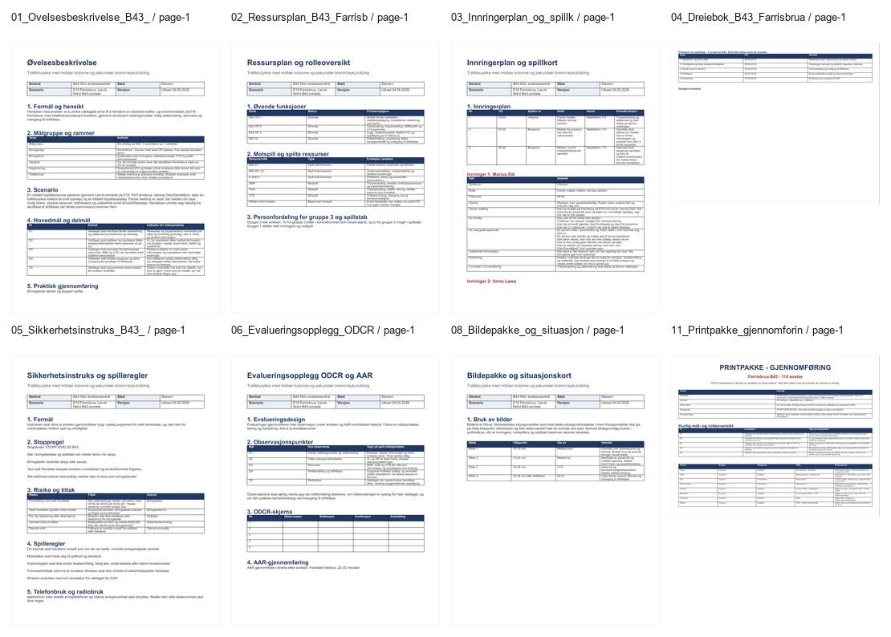

B43 Farrisbrua - samlet øvelsespakke
Arbeidsversjon for realistisk 90 minutters 110-øvelse i kontrollrom med ett vaktlag, trippelvarsling, innringerspill, motspill og systematisk evaluering.
Produksjonsdokumenter
Dokumentene som samlet utgjør øvelsespakken for B43 Farrisbrua.
Øvelsesbeskrivelse
Ramme, hensikt, mål, scenario og gjennomføringsform.
Åpne dokumentRessursplan
Roller, markører, motspill og kontrollromsoppsett.
Åpne dokumentInnringerplan og spillkort
Tre initiale innringere, trippelvarsling og korte meldinger.
Åpne dokumentDreiebok
Tidslinje, forventede handlinger, motspill og styringspunkter.
Åpne dokumentSikkerhetsinstruks
Rammer, stoppkriterier og sikker gjennomføring.
Åpne dokumentEvaluering
ODCR-observasjon, AAR og læringspunkter etter øvelsen.
Åpne dokumentPresentasjon
Gjennomgang før øvelse og støtte for evaluering.
Åpne presentasjonBildepakke og situasjonskort
Visuelle støttepunkter for innringere, markører og spillstab.
Åpne dokumentQA-sjekkliste
Kontrollpunkter for dokumenter, scenario og teknisk leveranse.
Åpne sjekklisteKilder og forutsetninger
Faglige kilder, forutsetninger og avgrensninger.
Åpne dokumentBilde- og videoprompter
Prompter for fotorealistiske bilder og IncidentShare-lignende video.
Åpne promptpakkeManifest
Maskinlesbar oversikt over produksjonsfiler.
Åpne manifestBilder og situasjonsstøtte
Eksisterende skisser ligger klare. Fotorealistiske bilder og video kan produseres fra promptdokumentet.
{kind=link}

{kind=link}

{kind=link}

{kind=link}

{kind=link}

{kind=link}

Plan, maler og faggrunnlag
Arbeidsgrunnlaget som er brukt for å bygge øvelsespakken.
Strategi for gjennomføring
Oversikt over utvikling fra start til ferdig øvelsespakke.
Åpne sideFlytskjema for gjennomføring
Visuell flyt for planleggingsgjennomgang og selve øvelsen.
Åpne flytskjemaLeveranseplan
Realistisk øvelse, leveranser og produksjonsrekkefølge.
Åpne planScenario totalforsvar
Scenarioarbeid og rammer for totalforsvarskontekst.
Åpne scenarioRealistisk 110-modell
Avgrensning mot reell 110-arbeidsflyt og driftsfase.
Åpne modellAlternativ B
Overordnet plan for valgt totalforsvarsvariant.
Åpne planGrunnbok øving
Kurs- og metodegrunnlag for øvelsesplanlegging.
Åpne PDFMetodehefte evaluering
Metodegrunnlag for systematisk evaluering.
Åpne PDFØvelsesmal
Malgrunnlag for øvelsesdokumenter.
Åpne malDreiebok mal
Malgrunnlag for dreiebok.
Åpne malAAR/evaluering mal
Malgrunnlag for evaluering og veilederrollen.
Åpne malSikkerhetsinstruks mal
Malgrunnlag for sikker gjennomføring.
Åpne malØvelsescase
Eksempel eller mal for casebygging.
Åpne dokumentØvelsesbeskrivelse mal
Opprinnelig mal for øvelsesbeskrivelse.
Åpne malØvelsesplanlegging og evaluering
Kursmateriell for planlegging og evaluering.
Åpne presentasjon